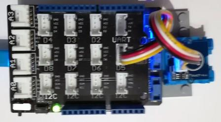

Version: 0.9.0
Grove TouchSensor is connected as followed on Netduino3:

| Grove SoundSensor | Mainboard with base shield |
|---|---|
| Yellow wire | Socket D5 |
using System.Diagnostics;
using System.Threading;
using Bauland.Grove;
using Bauland.Pins;
namespace TestTouchSensor
{
static class Program
{
static void Main()
{
// Grove TouchSensor is connected on D5 of Netduino 3 with base shield
TouchSensor touchSensor=new TouchSensor(Netduino3.GpioPin.D5);
touchSensor.Touched += TouchSensor_Touched;
touchSensor.Untouched += TouchSensor_Untouched;
while (true)
{
Thread.Sleep(20);
}
// ReSharper disable once FunctionNeverReturns
}
private static void TouchSensor_Untouched()
{
Debug.WriteLine("Sensor is untouched.");
}
private static void TouchSensor_Touched()
{
Debug.WriteLine("Sensor is touched.");
}
}
}